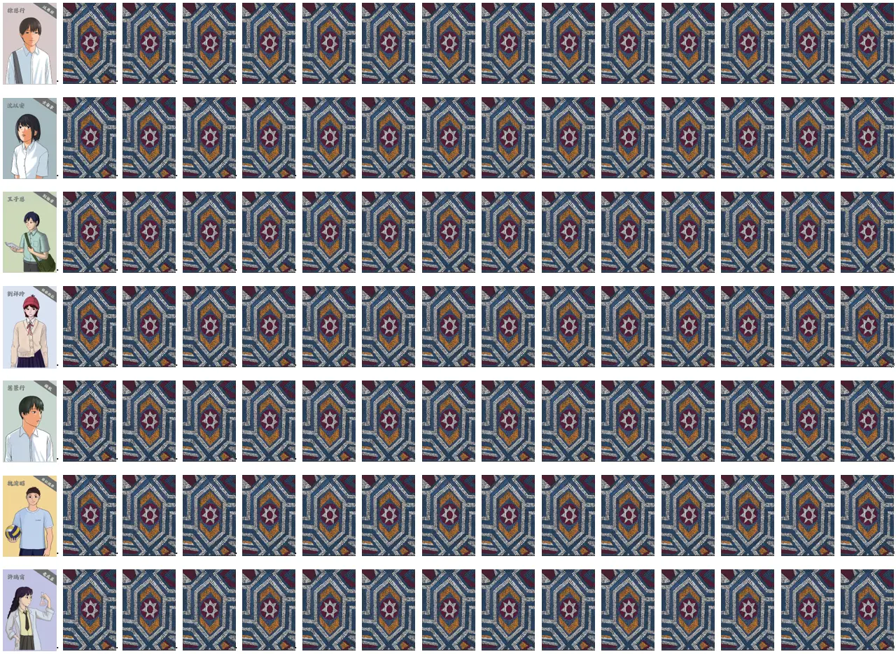

遊戲配件
本遊戲共使用 126 張牌，實際遊戲中會使用以下配件
- 14張〔身份牌］
- 老約翰 x 1（不使用）
- 教會 x 7（使用）
- 羅馬帝國 x 6（不使用）
- 14張〔生命值牌］：（不使用）
- 91張〔遊戲牌］：僅使用「書信種類（底色）」效果
- 【福音】：莫蘭迪黃色
- 【試煉】：莫蘭迪綠色
- 【追殺】：莫蘭迪紅色
- 【放逐】：莫蘭迪藍色
- 7張〔特殊牌］（七教會專用）
- 七教會各自對應一張專屬的［特殊牌］，列表如下：
- 以弗所（徐恩行）：燈臺
- 士每拿（沈以安）：冠冕
- 別迦摩（王子恩）：白石
- 推雅推拉（劉祥玲）：晨星
- 撒狄（葉景行）：白衣
- 非拉鐵非（魏渝昭）：柱子
- 老底嘉（許瑞甯）：眼藥
- 七教會各自對應一張專屬的［特殊牌］，列表如下：
遊戲開始前準備
牌陣設置方式
- 將 91 張遊戲牌 + 7 張特殊牌 混洗，將牌 排成 7 排 × 14 張 的矩陣。
- 每一牌代表一間教會，排列順序如下（由上到下）：
- 以弗所特殊技能－－愛心。
- 士每拿特殊技能－－受苦。
- 別迦摩特殊技能－－真理。
- 推雅推喇特殊技能－－聖潔。
- 撒狄特殊技能－－實在。
- 非拉鐵非特殊技能－－見證。
- 老底嘉特殊技能－－委身。
- 在每一排最左側額外放置一張對應的教會身份牌並翻開，作為該排教會的標示。教會身份牌不屬於遊戲牌，不會被翻動、交換或計入任何效果。
- 身份牌右側依序放置 14 張遊戲牌，全部蓋著，作為該輪可操作的牌。
遊戲共進行 7 輪，每一輪對應其中一排，僅處理該排的 14 張遊戲牌。 - 視覺化示意如下：

牌陣設置方式玩家角色分工與限制
由小組輔導分配
- 在規則說明完成後、遊戲正式開始前分配。
- 玩家限制與能力一覽表：
| 送信者人數 | 能力 | 限制 |
|---|---|---|
| 1 | 每輪可查看第 1、4、7、10、13 張牌 | 禁止說話（戴口罩） |
| 1 | 每輪可查看第 2、5、8、11、14 張牌 | 禁止說話（戴口罩） |
| 1 | 可翻開位置 1–7 的牌 | 禁止睜眼（戴口罩） |
| 1 | 可翻開位置 8–14 的牌 | 禁止睜眼（戴口罩） |
| 2 | 可任意交換「尚未翻開」的牌位置（唯一可跨排行動的角色） | 禁止說話（戴口罩） |
| 其他 | 溝通、引導、策略協調 | 禁止觸碰遊戲牌 |
- 所有限制全程有效。
- 除換牌者外，所有玩家的查看與翻牌行為，皆只能在當前回合的那一排進行。
每一輪遊戲流程
共 7 輪
- 每一輪限時 5 分鐘
- 由輔導計時
- 時間到即進入結算，不可再翻牌
- 依序完成七回合
- 翻牌規則
- 每一輪最多可翻開 7 張牌
- 僅計算翻開的牌（未翻開不影響）
- 翻到「對應教會的特殊牌」，視為成功送信
- 書信牌效果說明
- 試煉（綠）
- 可選擇是否計入 7 張限制
- 結算時，每張試煉使總分 × 1.2
- 放逐（藍）
- 立刻結束本輪
- 結算時，總分 × 1.5
分數結算方式
-
情況一：翻到該教會的「特殊牌」 → 視為成功寄送書信。得分公式：
（20 + 10 x 翻開的追殺數量 + 10 x 翻開的福音數量）x 1.2翻開的試煉數 x 1.5翻開的放逐數 - 情況二：未翻到特殊牌 → 比較福音與追殺
-
福音數 ≧ 追殺數（寄送成功）。得分公式：
（20 + 5 x 翻開的追殺數量 + 5 x 翻開的福音數量）x 1.2翻開的試煉數 x 1.5翻開的放逐數 -
追殺數 > 福音數（寄送失敗）。得分公式：
（-40 + 5 x 翻開的福音數量）x 1.2翻開的試煉數 x 1.5翻開的放逐數
-
福音數 ≧ 追殺數（寄送成功）。得分公式：
- 簡易計分表連結
遊戲結束後小組分享題目
- 在幫助約翰送信的過程中，你受到那些限制？當時的感受為何？
- 當大家必須彼此配合、分工合作時，你的心情有什麼改變？
- 找出這七間教會對應的特殊牌，反映了他們的哪些屬靈光景與特質？
- 從今天一整天的活動中，你覺得老約翰送信的心意為何？
故事文本
遊戲結束後，建議玩家可以讀故事文本